Model B Evaluation Board
Overview
The RTL87x2G Model B evaluation board is compatible with the following daughter boards:
The RTL87x2G Model B evaluation board provides a hardware environment for user development, including:
5V to 3.3V & 1.8V LDO power module
Support QSPI (Group1), I8080 (Group2), RGB888 display interface
Support Wi-Fi module and SD Nand Flash module interface
Support RS485 and A2C interface
Support infrared sensing interface
Support temperature and humidity sensor interface
Ethernet module
Note
To purchase EVB, please visit the official Realtek website for Shopping Guide.
Blocks Distribution
Blocks Distribution on the Front and Back of the Model B evaluation board are as following.
{kind=link}
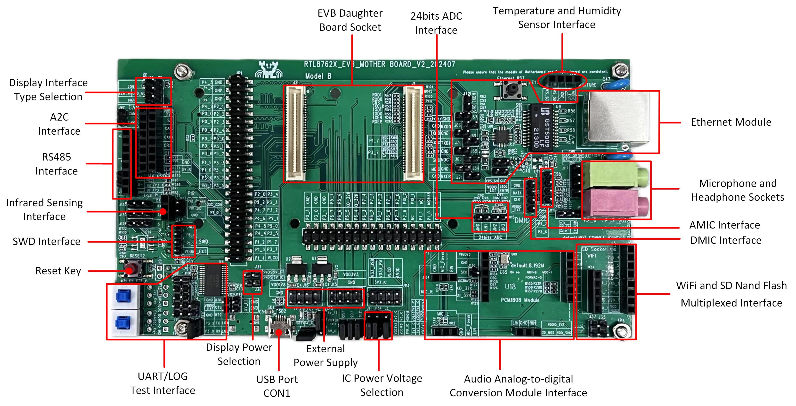
Model B EVB Blocks Distribution Diagram-Front
{kind=link}
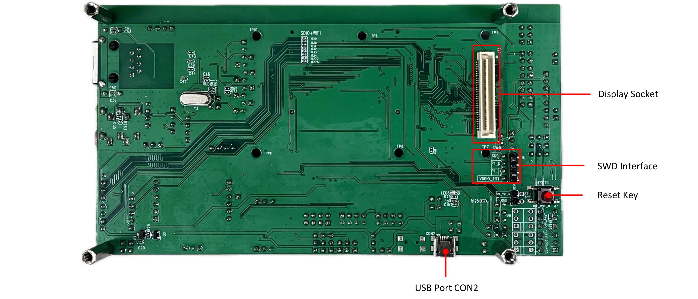
Model B EVB Blocks Distribution Diagram-Back
The following introduces the blocks on the evaluation board in counterclockwise order.
Blocks |
Introductionm |
|---|---|
EVB Daughter Board Socket |
Used to connect the EVB Daughter Board with an anti-reverse insertion mechanism. |
Model B EVB supports QSPI (Group1), I8080 (Group2), RGB888 display interface. |
|
Used to connect the A2C module. |
|
Used to connect the RS485 module. |
|
Used to connect the infrared sensor module. |
|
SWD Interface |
Used to SWD debug. |
Reset Key |
Pressing this key resets the system. |
Supports download mode and normal mode. |
|
Supports USB Port CON1 or CON2 to power the display. |
|
Used to power EVB and communicate with RTL87x2G via USB. |
|
External Power Supply |
Provides external power supply of 1.8V and 3.3V. |
Provides IC power voltage options of 1.8V or 3.3V. |
|
Used to connect the audio analog-to-digital conversion module. |
|
Used to connect Wi-Fi module or RTK SD Nand Flash daughter board. |
|
DMIC Interface |
Used to connect the external DMIC daughter board. |
AMIC Interface |
Used to connect the external AMIC daughter board. |
Microphone and Headphone Sockets |
Supports 3.5mm audio interface. |
The Ethernet module adopts RTL8201FR and supports RMII interface. |
|
Used to connect to the temperature and humidity sensor. |
|
24bits ADC Interface |
24bits ADC, AIN0-3 can be used as four single-ended inputs. AIN0-1 and AIN2-3 can be used as two differential inputs. |
Used to power the EVB and connect USB to UART chip FT232RL for downloading programs or debug. |
|
Display Socket |
Used to connect display screen. |
Interfaces Distribution

Model B EVB Interfaces Distribution Diagram-Front
{kind=link}
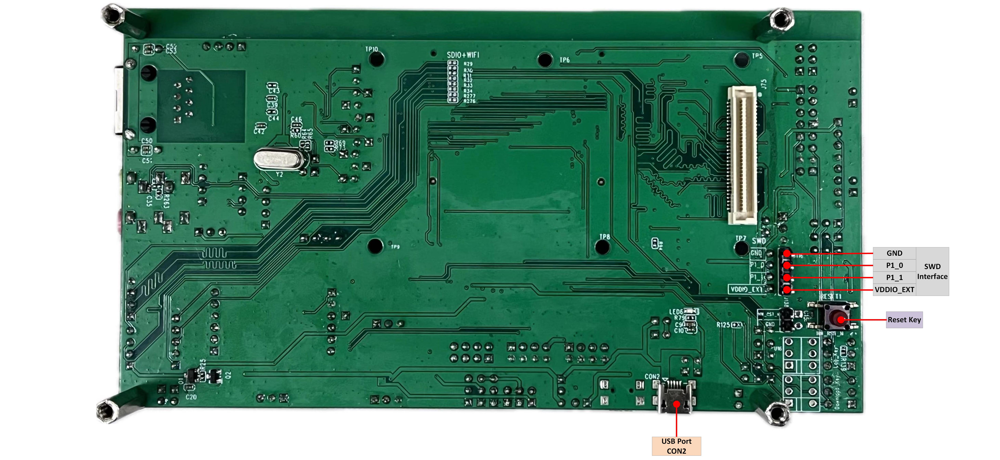
Model B EVB Interfaces Distribution Diagram-Back
Note
Pin names on the evaluation board preceded by a forward slash, such as /P1_7 or /P3_7, indicate that these pins are not directly connected to the IC. When using these pins, you will need to place a corresponding 0-ohm resistor.
Blocks and Interfaces Introduction
EVB Daughter Board
Daughter board can be removed and replaced. There is an anti-reverse insertion mechanism between mother board and daughter board. RTL8762GWP/GWF daughter boards are compatible with the RTL87x2G Model B evaluation board.

RTL8772GWP and RTL8772GWF Daughter Board
Power
- USB Port CON1
USB Port CON1 is used to power the Model B evaluation board and communicate with RTL87x2G via USB.
- USB Port CON2
USB Port CON2 is used to power the Model B evaluation board and connect USB to UART chip FT232RL for downloading programs or debug.
{kind=link}
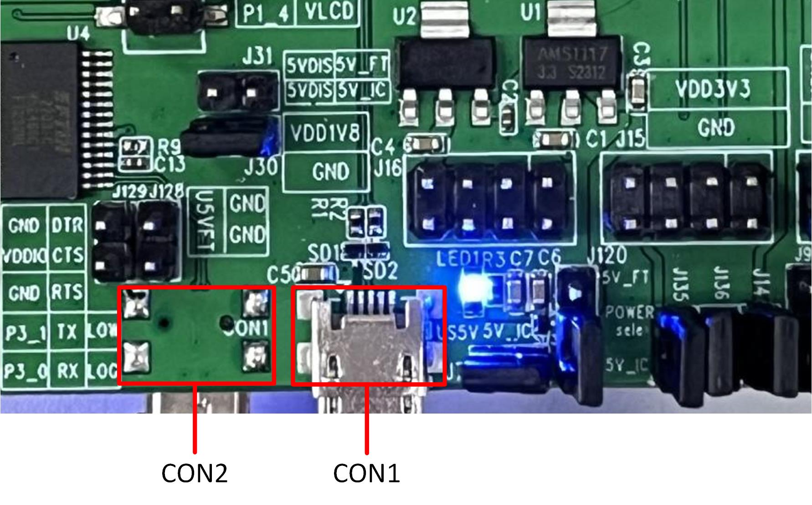
USB Port CON1 and CON2 of Model B EVB
- IC Power Voltage Selection
VDD_VBAT/VDDIO/VDDIO_EXT can choose 1.8V or 3.3V power supply according to the actual application, with default connection of 3.3V. Power input pins are introduced as follows:
Pin Name |
Function |
|---|---|
V33_USB |
Power supply for USB transceiver |
VD33_PA |
Power supply for the internal +14dBm radio power amplifier |
AVDD |
Power supply for the internal 24bits ADC |
VDD_VBAT |
Power supply for the internal regulator and analog circuitry |
VDDIO |
Power supply for PAD and Flash |
VDDIO18 |
Power supply for MCM PSRAM |
VDDIO_EXT |
Power supply for external devices |
Note
VDDIO and VDDIO_EXT power supply should be consistent.
When using RTL8772GWP daughter board, VDDIO18 can only select 1.8V.
{kind=link}
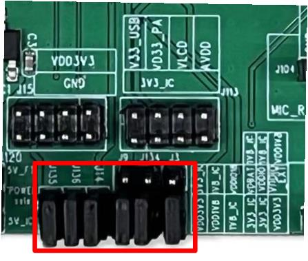
IC Power Select Connecting of Model B EVB
EVB Interfaces
- UART/LOG Test Interface
- Download mode:
Both button switches marked in red need to be pressed, which will pull down the LOG pin, then press reset button or power on again to enter download mode.
- Normal mode:
Both button switches marked in red need to be released. Press reset button or power on again to start running the program. Log pin can be used for debug.
{kind=link}
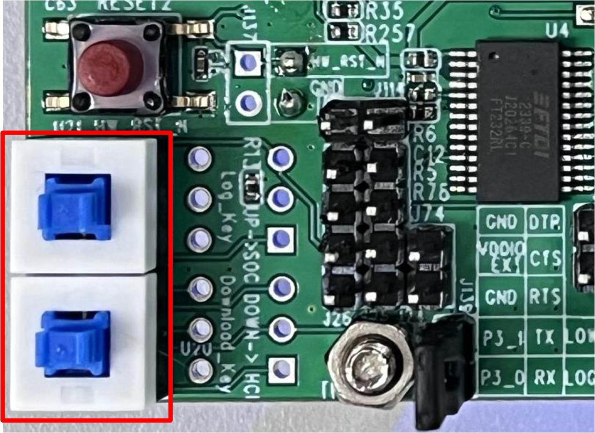
UART/LOG Communication Switches of Model B EVB
- RS485 Interface
When using RS485, it is necessary to connect the three sets of pins marked in the blue box with jumpers. RS485 Module input is 3.3V-TTL. When connecting the RS485 module to EVB, pay attention to the one-to-one correspondence between each pin on the module and the RS485 interface on the EVB to prevent reverse insertion.

RS485 Interface Module of Model B EVB
{kind=link}
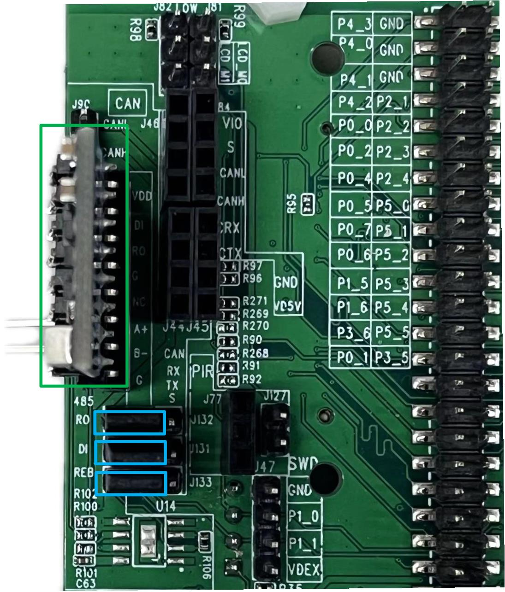
RS485 Module Connecting of Model B EVB
- A2C Interface
A2C Interface is shown in the green box, where there are two rows of green boxes that can be as A2C interface, and the other row is the A2C test interface. When using CAN module, it is necessary to connect the three sets of pins marked in the blue box with jumpers. The module adopts TJA1051, which is a high-speed transceiver that provides differential transmission and reception functions for the controller, with a transmission rate of up to 1Mbit/s. When connecting the module to EVB, pay attention to the one-to-one correspondence between each pin on the module and the A2C interface on the EVB to prevent reverse insertion.
{kind=link}
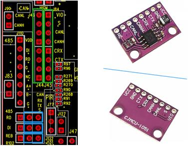
A2C Interface and Module of Model B EVB
{kind=link}
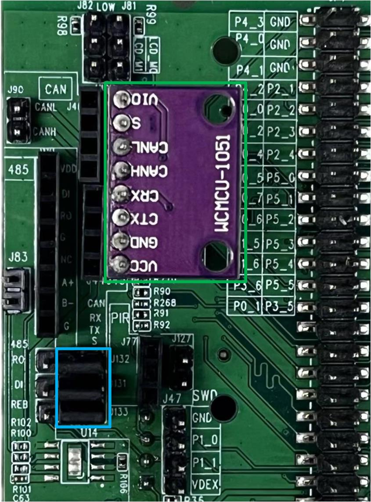
A2C Interface Connecting of Model B EVB
- Audio Analog-to-digital Conversion Interface
MIC_L and MIC_R in Audio Analog-to-Digital Conversion Interface are connected to microphones as audio input; The audio analog-to-digital conversion module is placed in U19. Pay attention to the pin order when connecting to prevent reverse connection. Audio Analog-to-Digital Conversion Module uses a PCM1808 device with a 24bits A/D converter, and includes a digital decimation filter and a high pass filter to eliminate the DC part of the input signal. PCM1808 supports master-slave mode and two data formats in the serial audio interface. It supports power down and reset functions by pausing the system clock, with a sampling rate range of 8kHz~96kHz. The power supply is 5V analog power supply and 3.3V digital power supply.

Audio Analog-to-Digital Conversion Interface of Model B EVB
{kind=link}
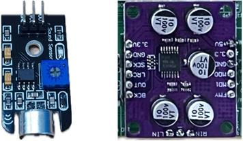
Microphone(L) and Audio Analog-to-Digital Conversion Module(R)
{kind=link}
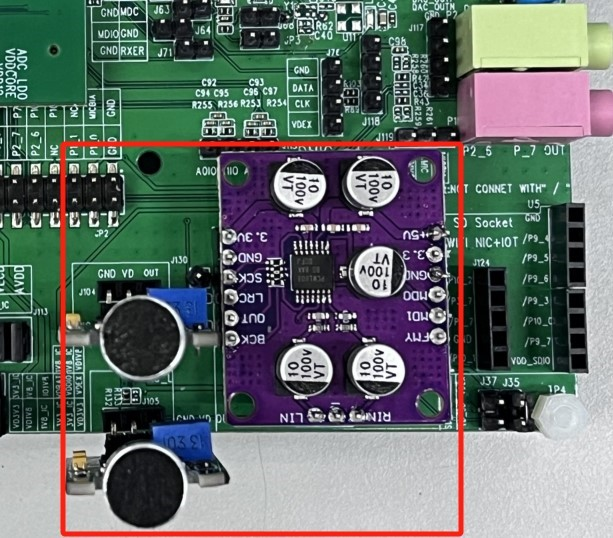
Audio Analog-to-Digital Conversion Module Connecting of Model B EVB
- Infrared Sensing Interface
When using Infrared Sensor Module, it is necessary to place a jumper on J127, and then plug the infrared sensing module into J77. Pay attention to the order of the plug positions to prevent reverse connection. The infrared sensor module adopts HC-SR505, with a working voltage range of 4.5~20V and a static current of less than 50uA. When a person enters its sensing range, it will output a high level, and when leaves the sensing range, it will automatically delay closing the high level and output a low level. Support for repeatable triggering, that is, after outputting a high level, if a person is active within its sensing range within a delay time, its output will remain high until the person leaves, and the delay will change the high level to low level.
{kind=link}
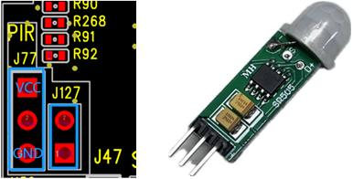
Infrared Sensing Interface of Model B EVB
{kind=link}
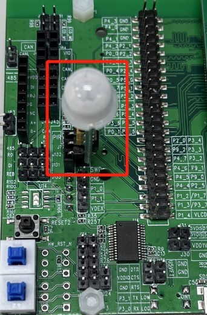
Infrared Sensor Module Connecting of Model B EVB
- Temperature and Humidity Sensor Interface
Temperature and humidity sensor module has a power supply voltage of 2.4~5.5V and supports the I2C communication protocol. The temperature range and accuracy are -40~+125℃ and ±0.2℃, respectively. The humidity range and accuracy are 0~100% RH and ± 2% RH, respectively. The power consumption is 4.8uW (once/second). When connecting, pay attention to the sequence of plug positions to prevent reverse connections.
{kind=link}
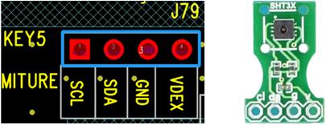
Temperature and Humidity Sensor Interface of Model B EVB
{kind=link}
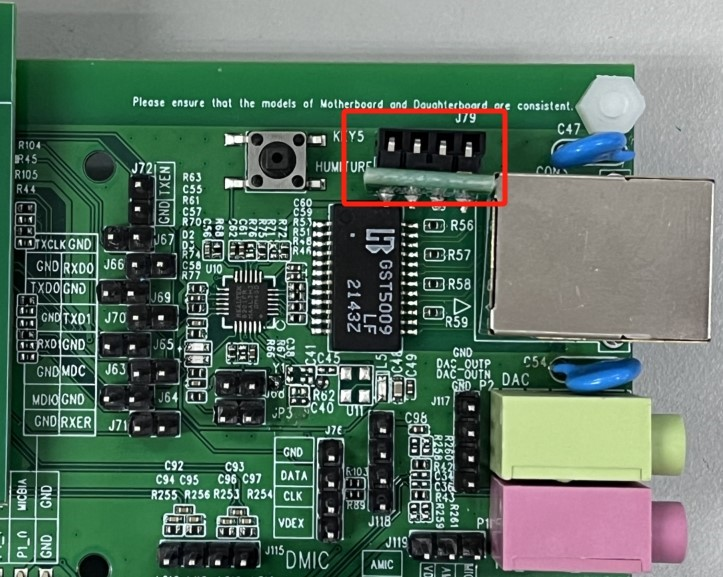
Temperature and Humidity Sensor Connecting of Model B EVB
- Wi-Fi and SD Nand Flash Multiplexed Interface
Wi-Fi Module is BL-M8189FS6, supporting SDIO interfaces. Supports the IEEE 802.11b/g/n standard and provides a PHY rate of up to 150 Mbps, providing rich wireless connectivity and reliable throughput over long distances.
SD NAND Flash Interface can be used with the RTK SD NAND flash daughter board. When connecting, insert the SD NAND flash interface marked in the blue box on the right of figure, paying attention to the order of the connection positions to prevent reverse connection.

Wi-Fi Interface and Module of Model B EVB

SD NAND Flash Interface and Daughter Board of Model B EVB
{kind=link}
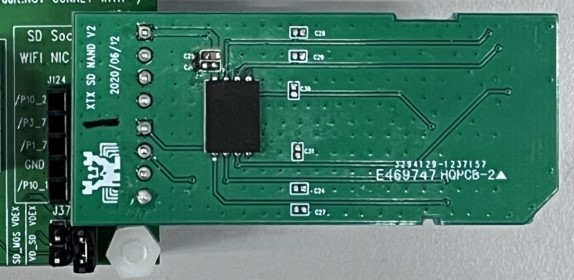
SD NAND Flash Connection of Model B EVB
Note
Normal Mode: When using the Wi-Fi or SD Nand Flash module, you need to use a jumper to connect the J35.
Low Power Mode: Remove the jumper from J35, and then connect the pin headers marked in the blue box in J37 to any GPIO. When the GPIO output is high, the Wi-Fi or SD Nand Flash modules work normally. When the GPIO output is low, the modules do not work.
- Ethernet Module
Ethernet Module uses RTL8201FR, supports RMII interface. The button marked in the red box is the reset button for the Ethernet module.

Ethernet module of Model B EVB
EVB Pin Assignment
Please refer to the latest RTL87x2G IOPin Information Table about the pin assignment of EVB.
EVB User Guide
EVB Power Connection
Model B EVB can be powered independently using USB Port CON2, in which case the USB communication function of RTL87x2G cannot be used, but programs can be normally downloaded into RTL87x2G. The power connection of the evaluation board is shown below. All jumpers marked in the red box need to be connected.
{kind=link}
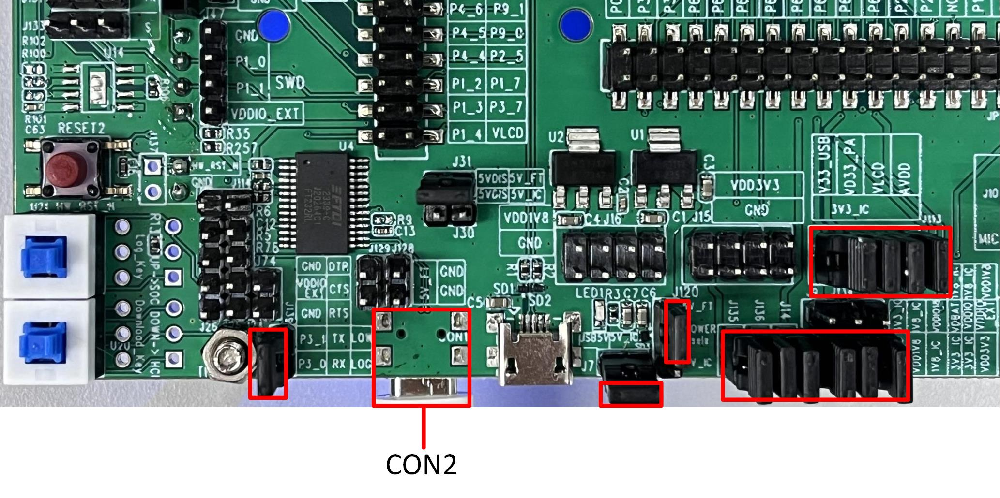
Power Supply with USB Port CON2 of Model B EVB
If the USB communication function of RTL87x2G needs to be used, both the USB Ports CON1 and CON2 on the evaluation board need to be connected. In this situation, the power supply connection is shown below, and all jumpers marked in the red box need to be placed. The difference between using a single USB Port CON2 for power supply is that in J120, the jumper is selected as 5V_IC.
{kind=link}
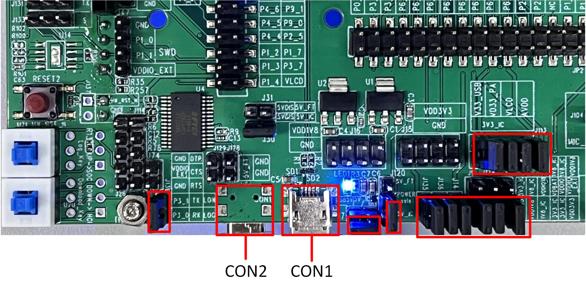
Power Supply with USB Port CON1 and CON2 of Model B EVB
Download Mode Connection
P0_3 is the download mode selection pin. When P0_3 is pulled low, hardware reset or power cycling will put the system into download mode. In the UART/LOG Test Interface, both switches marked in the red box need to be pressed, which will pull P0_3 (log) low, connect P3_0 to RX and P3_1 to TX. Then press the reset button or power cycle the system to enter download mode.
Normal Mode Connection
Please confirm that the two button switches marked in the red box in the UART/LOG Test Interface are released, which means that P0_3 (log) is connected to RX, P3_0 and P3_1 are disconnected from RX and TX respectively. Use the Debug Analyzer via the USB Port CON2 for debug.
Ethernet and SDIO Interface Switching
Due to the fact that the Ethernet module, SDIO and Wi-Fi module share the same set of SDIO interfaces. When using the Ethernet module, it is necessary to place the resistors in Switch to Ethernet Interface and remove the resistors in Switch to SDIO Interface; When using the Wi-Fi or SDIO module, it is necessary to place the resistors in Switch to SDIO Interface and remove the resistors in Switch to Ethernet Interface. By default, the Ethernet module is selected.
{kind=link}
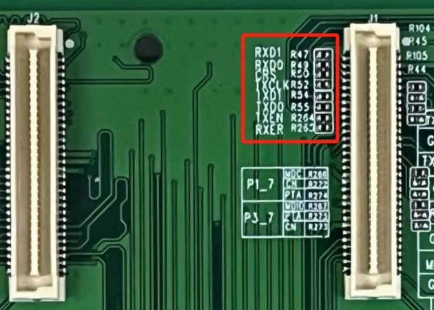
Switch to Ethernet Interface of Model B EVB
{kind=link}
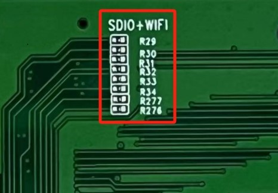
Switch to SDIO Interface of Model B EVB
Display Interface
- Power Selection
When using USB Port CON2 for power supply, 5VDIS can only connect to 5V_FT. When using USB Port CON1 and CON2 for power supply, 5VDIS can be connected to 5V_FT or 5V_IC.
{kind=link}
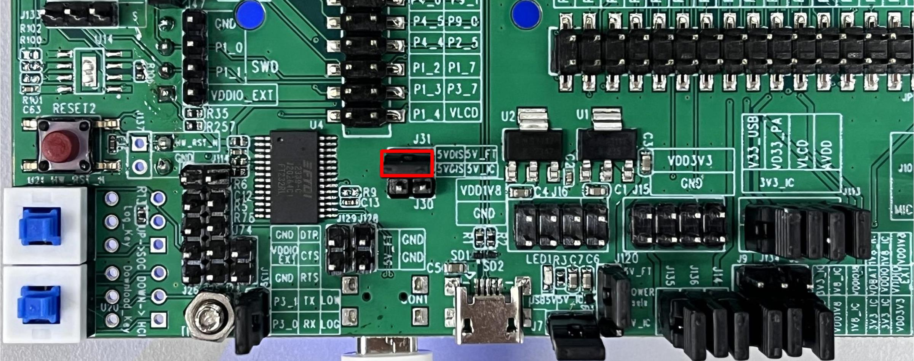
Display Power Supply by 5V_FT
{kind=link}
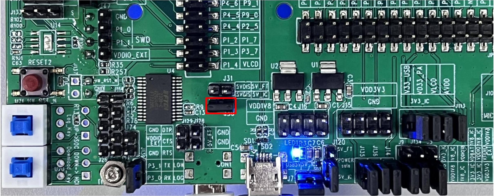
Display Power Supply by 5V_FT or 5V_IC
- Display Interface Type Selection
Display type interface can be selected by setting the status of LCD_IM[1:0] based on used screen. Please refer to the datasheet of display driver chip for details.
PIN Name |
QSPI (Group1) Interface |
I8080 (Group2) Interface |
RGB888 Interface |
|---|---|---|---|
P2_2 |
TP_RST |
TP_RST |
TP_RST |
P2_3 |
TP_INT |
TP_INT |
TP_INT |
P2_4 |
TP_SCL |
TP_SCL |
TP_SCL |
P2_5 |
TP_SDA |
TP_SDA |
TP_SDA |
P1_4 |
LCD_BL_CTRL |
LCD_BL_CTRL |
LCD_BL_CTRL |
P4_3 |
QSPI_CS |
8080_D7 |
D7 |
P3_4 |
QSPI_DCX |
D16 |
|
P4_0 |
QSPI_CLK (PHY) |
8080_D4 |
D4 |
P3_3 |
QSPI_SIO3 |
D15 |
|
P3_2 |
QSPI_SIO2 |
D14 |
|
P4_1 |
QSPI_SIO1 |
8080_D5 |
D5 |
P4_2 |
QSPI_SIO0 |
8080_D6 |
D6 |
P3_6 |
LCD_RESX |
LCD_RESX |
CM |
P0_5 |
LCD_TE (VSYNC) |
8080_D1 |
D1 |
P0_2 |
8080_WR# |
PCLK |
|
P1_5 |
8080_DCX |
HSYNC |
|
P1_6 |
8080_RD# |
SD |
|
P0_7 |
8080_D3 |
D3 |
|
P0_6 |
8080_D2 |
D2 |
|
P0_4 |
8080_D0 |
D0 |
|
P0_1 |
8080_LCD_TE |
VSYNC |
|
P0_0 |
8080_CS# |
DE |
|
P5_0 |
D23 |
||
P5_1 |
D22 |
||
P5_2 |
D21 |
||
P5_3 |
D20 |
||
P5_4 |
D19 |
||
P5_5 |
D18 |
||
P3_5 |
D17 |
||
P9_2 |
D13 |
||
P4_7 |
D12 |
||
P4_6 |
D11 |
||
P4_5 |
D10 |
||
P4_4 |
D9 |
||
P1_2 |
D8 |
||
P9_1 |
SPI_CS |
||
P9_0 |
SPI_CLK |
||
P1_3 |
SPI_DO |
IC Power Consumption Test
Model B evaluation board provides IC power consumption test interface for 1.8V and 3.3V.
When the IC is powered by 3.3V, disconnect J135 before measuring. Then connect the ammeter to measure the current passing through J135.
When the IC is powered by 1.8V, disconnect J136 before measuring. Then connect the ammeter to measure the current passing through J136.
{kind=link}
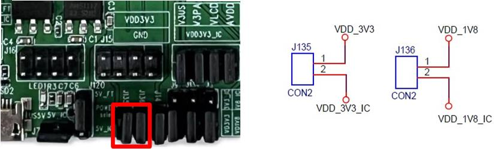
IC Power Consumption Test Interface
Note
Please properly connect the jumpers according to the Introduction of Power Supply Input Pins and the power consumption measurement scenarios.
To avoid extra power consumption, it is necessary to turn off log printing.
To avoid the effect from debugging equipment, please do not connect UART, SWD, and debugger.
To avoid the effect of the Ethernet module, remove resistors R47, R49, and R266, or configure P1_7, P9_3, and P9_4 to pull-none and shutdown mode.
When using an external DC power supply, the jumpers of J135 and J136 need to be unplugged, then DC power needs to be connected to VDD_3V3_IC. Note that when using RTL8772GWP daughter board, because MCMPSRAM of RTL8772GWP daughter board is powered by 1.8V, the voltage of the DC power source connected to VDD_1V8_IC can only be 1.8V.
RF Test
When performing RF performance testing for Bluetooth/Zigbee using the RF Test Tool, both buttons marked in red need to be pressed down. Then, remove the jumper from the log key, allowing P0_3 to return to a floating state, P3_0 connected to RX, and P3_1 connected to TX.
{kind=link}
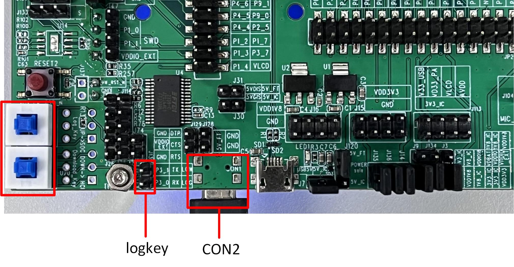
Connection for RF Test